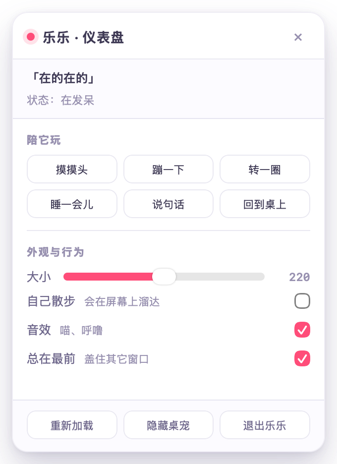

第 8 步 · 变成桌面桌宠
前面做的都是「网页里的一只猫」。这一步把它挪到桌面上： 没有浏览器、没有标签页，就是一张贴在桌面上的透明浮窗。
cd desktop/macos && ./build.sh
它和网页版的区别
| 网页版 | 桌面版 | |
|---|---|---|
| 窗口 | 浏览器标签页 | 透明无边框浮窗，形状就是猫 |
| 层级 | 网页里的 z-index | 压在其它 App 上面（可切） |
| 拖拽 | 猫在画布上移动 | 移动整个窗口 |
| 眼睛 | 跟着鼠标（仅窗口内） | 跟着真实光标（鼠标不在窗口上也看） |
| 空白处 | 页面的一部分 | 点穿，不挡下面的软件 |
| 焦点 | — | 点它不会把你正在写的代码切走 |
| 控制面板 | 页面左侧那块卡片 | 右键弹出仪表盘（同样的功能） |
为什么用原生壳，不用 Electron
| Swift 原生壳（本方案） | Electron | |
|---|---|---|
| 要下载 | 什么都不用（系统自带 swiftc） | 约 100–150 MB |
| 产物体积 | 1.0 MB | 150 MB 起 |
| 透明 + 不抢焦点 | 原生窗口属性，一行一个 | 可以，但各平台行为不一致 |
| 跨平台 | ❌ 只有 macOS | ✅ |
结论：macOS 用原生（这页讲的），Windows / Linux 用 Electron（最后一节给思路）。 网页部分不用改 —— 这正是下面第 3 点设计成「事件交出去」的原因。
三行命令
cd desktop/macos ./build.sh # 打包（只用 swiftc，几秒钟） open build/乐乐桌宠.app # 或者 Finder 里双击
外壳做了四件事
1. 一个透明、点了也不激活的窗口
panel = PetPanel(contentRect: rect,
styleMask: [.borderless, .nonactivatingPanel], // 无边框 + 点它不激活 App
backing: .buffered, defer: false)
panel.isOpaque = false
panel.backgroundColor = .clear // 窗口底色透明
panel.hasShadow = false // 不要系统投影（否则有一圈灰边）
panel.level = .floating // 总在最前
关键是 .nonactivatingPanel：普通窗口被点会激活整个 App，
把你正在写的代码切走；这个不会。
2. 让 WKWebView 别刷白底
页面里 html/body 早就是透明的了，但 WKWebView 自己还会刷一层白。
不关掉就是「白框里一只猫」。
// 公开 API 里没有这个开关，要用私有的 _setDrawsBackground:
if web.responds(to: NSSelectorFromString("_setDrawsBackground:")) {
web.setValue(false, forKey: "drawsBackground") // KVC 会自动找到带下划线的 setter
}responds(to: "setDrawsBackground:") 判断，
结果在这个系统上只有 _setDrawsBackground:，判断失败 → 静默跳过 →
窗口一直是白底。别只看「有没有报错」，要看 web.isOpaque 的值。
3. 拖拽交给窗口
网页里拖宠物只是挪画布；桌面上要挪窗口。 所以组件提供了一个开关：它自己不动，只把事件交出来。
dragMode: 'external',
onDragStart: e => send({ cmd: 'dragStart', x: e.screenX, y: e.screenY }),
onDragMove: e => send({ cmd: 'dragMove', x: e.screenX, y: e.screenY }),
onDragEnd: e => send({ cmd: 'dragEnd', x: e.screenX, y: e.screenY })Swift 那边用「当前屏幕坐标 − 按下时的屏幕坐标」去移动窗口。 注意 JS 的屏幕坐标是左上原点、y 向下；AppKit 是左下原点、y 向上， 所以纵向位移要取反。
4. 把真实鼠标喂给眼睛
// 每 50ms 推一次：窗口左上角 + 鼠标位置，四个数都按「CSS 像素、主屏左上原点」
let m = NSEvent.mouseLocation // AppKit 坐标（左下原点）
let top = NSScreen.screens.first?.frame.maxY ?? 0 // 转成 CSS 的左上原点
let f = panel.frame
let js = String(format: "window.petLookAt(%.1f, %.1f, %.1f, %.1f)",
f.minX, top - f.maxY, m.x, top - m.y)window.petLookAt = function (winLeft, winTop, mouseX, mouseY) {
pet.lookAt(mouseX - winLeft, mouseY - winTop); // 减一下就得到窗口内坐标
};window.screenX / screenY 去换算窗口位置的 ——
结果 WKWebView 里这两个值基本不可信：
实测无论窗口在哪，它们恒定返回 0 和 屏幕高度。
于是「鼠标屏幕坐标 − 窗口位置」算出来的局部坐标是错的，
眼睛就一直卡在一个方向，看着像「没有跟踪」。
现在的做法：窗口位置由外壳一起送过来，页面只做一次减法。
验证方式是把指针真的挪到窗口四边，看眼睛朝哪（--probe 自动做）：
probe · 指针在左边：{"x":-7.8,"y":-1.7} gaze.x 应为负 ✓
probe · 指针在右边：{"x":7.7,"y":-1.7} gaze.x 应为正 ✓
probe · 指针在上边：{"x":0,"y":-9} gaze.y 应为负 ✓
probe · 指针在下边：{"x":0,"y":6.1} gaze.y 应为正 ✓注意这件事的教训：「消息发出去了」不等于「效果对了」。 我最早的日志只打了「视线推送 20 次完成」，看着一切正常 —— 但坐标是错的。 测量要看结果，不是看过程。
右键：仪表盘
右键桌宠（或菜单栏 🐱 → 打开仪表盘）弹出来的不是干巴巴的系统菜单，而是一个控制面板 —— 它就是网页版那块卡片的桌面版，用的是同一套 HTML / CSS。

| 面板上有什么 | 背后做什么 |
|---|---|
| 摸摸头 / 蹦一下 / 转一圈 | desktopPet.pat(true) / hop() / spin() |
| 睡一会儿 / 说句话 | sleep() / say(随机台词) |
| 回到桌上 | 窗口带动画滑回右下角 |
| 大小滑块（160–280） | setSize() + 同步窗口尺寸 |
| 自己散步 | 外壳定时器让窗口沿屏幕底边溜达，朝哪边走猫就朝哪边 |
| 音效 / 总在最前 | setVolume() / 窗口 level |
| 重新加载 / 隐藏 / 退出 | — |
面板上的「状态：在发呆」和「「呼噜呼噜…」」不是本地缓存，而是每次操作后从桌宠那边读回来的：
// 面板 → 外壳 → 桌宠
{ cmd: 'dash', action: 'pat' } → desktopPet.pat(true)
// 桌宠 → 外壳 → 面板（回灌状态）
JSON.stringify({ state, said, size, sound, roam, top })
→ window.dashUpdate(json)dashboard.html 里加个 <button data-a="dance">，
再到 Pet.swift 的 handleDash 里加一个 case "dance"。
不用写任何原生控件 —— 这是复用 WebView 的最大好处。
还能点穿：透明区域不挡路
窗口比猫大（上面要给气泡留位置），那圈透明区域不该挡住下面的软件。 页面把「猫身上那块」报给外壳，外壳每 1/30 秒对比一次鼠标位置：
if panel.ignoresMouseEvents == inside { panel.ignoresMouseEvents = !inside }鼠标在猫身上 → 接点击；移出去 → 立刻忽略鼠标，点击穿到下面的 App。
不开截图权限，也能验证「真的透明白」
这台机器没给「屏幕录制」权限，screencapture 直接报
could not create image from display。所以让它自己验：
cd desktop/macos ./build.sh --selftest # 打印窗口属性 + 页面状态后自动退出 ./build.sh --run # 打包 + 启动 # 或者手动看日志 open -n build/乐乐桌宠.app cat /tmp/lele-pet-desktop.log
日志长这样，四项对上就说明真的「只有猫、没有白框」：
panel · frame={{1337, 285}, {328, 444}} level=3 opaque=false bgAlpha=0.0
web · didFinish pet.html
page · {"pet":true,"ready":true,"mode":"rig","w":220,"bridge":true,"hit":[80,234,167,176]}
alpha · web.isOpaque=false webLayerAlpha=0.0 panelAlpha=0.0 panelOpaque=false
capture · /tmp/lele-window.png 656x888 角点 a=0.00 a=0.00 a=0.00 a=1.00| 看哪 | 应该是 | 为什么 |
|---|---|---|
opaque / isOpaque | false | 窗口和 WebView 都不刷底色 |
level | 3（floating） | 总在最前 |
mode | rig | 皮 + 两只眼睛都加载成功 |
| 角点 alpha | 0.00 | 四角透明确实透，不是白 |
另外两个调试参数
| 参数 | 作用 |
|---|---|
--shot | 让 WKWebView 自己截图到 /tmp/lele-shot.png（不需要屏幕权限） |
--dragtest |
在页面里合成 pointer 事件，走完「JS → 桥 → 移动窗口」整条链，核对位移是不是 32pt |
--dashtest |
打开仪表盘，真的点击上面的按钮、拖滑块，核对桌宠反应 / 面板回显 / 窗口尺寸 |
--dashshot | 把仪表盘渲染成 /tmp/lele-dash.png，确认排版没坏 |
--probe | 把指针依次挪到窗口四边，核对眼睛有没有朝对应方向（视线跟随的端到端测试） |
为什么是 32 而不是 40：拖拽要超过 7px 阈值才开始，基准点是第一次 move（+8），
所以总位移是 5×8 − 8 = 32。这种「在测试里发现期望值算错」的时刻，
比肉眼盯着屏幕可靠得多。
想改什么
| 想改 | 改哪儿 |
|---|---|
| 默认大小 | Pet.swift 的 sizes 数组 |
| 猫在窗口里的位置 | pet.html 的 size / x / floor |
| 菜单项 | Pet.swift 的 rebuildMenu() |
| 换一只猫 | 换 assets/ 四张图 + 同步组件常量，再 ./build.sh |
藏起来之后怎么找回来
藏起来的那一刻，屏幕上方还会弹一条 4 秒的小提示，直接把这两个入口写在上面：
// 再次双击 App → 把猫叫回来
func applicationShouldHandleReopen(_ sender: NSApplication, hasVisibleWindows flag: Bool) -> Bool {
showPet()
return false
}
// 藏起来的瞬间给一条提示，否则用户以为程序没了
Hint.show("乐乐藏起来了\n点菜单栏 🐱 →「叫出来」，或再双击一次 App")为什么专门为这个写一节：我第一次做的时候只留了菜单栏一个入口， 藏起来之后自己都愣了一下 —— 界面上没有任何线索。
Windows / Linux：Electron 版（已经做好了）
macOS 那个壳用的是 AppKit，别的系统跑不了。所以又做了一个 Electron 版，
代码在 desktop/electron/，网页部分一行都没改。
cd desktop/electron npm install # 第一次下载 Electron（约 100MB） npm start
能不改网页，靠的是 preload.js 把
window.webkit.messageHandlers.pet/dash 桥接成 IPC：
const { contextBridge, ipcRenderer } = require('electron');
const chan = (name) => ({ postMessage: (msg) => ipcRenderer.send(name, msg) });
contextBridge.exposeInMainWorld('webkit', {
messageHandlers: { pet: chan('pet'), dash: chan('dash') },
});| 功能 | macOS 原生壳 | Electron 壳 |
|---|---|---|
| 透明窗口 | _setDrawsBackground(false) | transparent:true + frame:false |
| 总在最前 | panel.level = .floating | setAlwaysOnTop(true,'screen-saver') |
| 点穿 | panel.ignoresMouseEvents | setIgnoreMouseEvents |
| 视线 | NSEvent.mouseLocation | screen.getCursorScreenPoint() |
| 拖拽 | panel.setFrameOrigin | win.setPosition |
| 仪表盘 | 第二个 NSPanel | 第二个 BrowserWindow |
| 体积 | 约 1 MB | 约 200 MB（自带 Chromium） |
② 托盘：GNOME 要装
gnome-shell-extension-appindicator，否则看不到托盘图标
（右键猫猫仍可开面板）。③ Wayland：默认走 XWayland 一切正常；用原生 Wayland （
ELECTRON_OZONE_PLATFORM_HINT=auto）时点穿可能失效。④
ELECTRON_RUN_AS_NODE=1（VS Code 终端里常见）会让 Electron 当普通 Node 跑，
报 app is undefined —— env -u ELECTRON_RUN_AS_NODE npx electron .。
自检和 mac 版一一对应：npm run selftest / dragtest / dashtest。
已知限制
- 原生壳只支持 macOS（用了 AppKit + WKWebView）；Windows/Linux 用上一节的 Electron 版（已有，可直接跑）。
- 透明依赖私有 selector
_setDrawsBackground:，系统大版本升级后可能改名。 真变了也不致命 —— 会退化成白底窗口，日志里的web.isOpaque会立刻告诉你。 - 只是 ad-hoc 签名（本机自用）。拷到别的 Mac 上首次打开，要在 「系统设置 → 隐私与安全性」点「仍要打开」。
- 桌宠窗口不抢焦点 = 它本身不接键盘输入（网页版里回车逗它那套在桌面版不生效）。 但仪表盘是另一个窗口，它能接键盘 —— 所以 Esc 关面板是好的。
完整说明在 desktop/README.md · 源码 desktop/macos/Pet.swift · 桌面页面 desktop/macos/pet.html